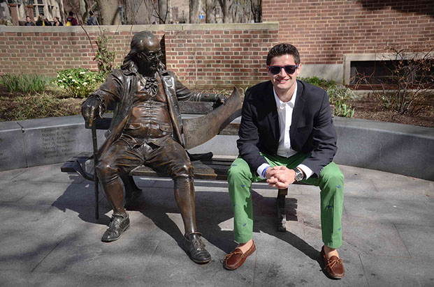
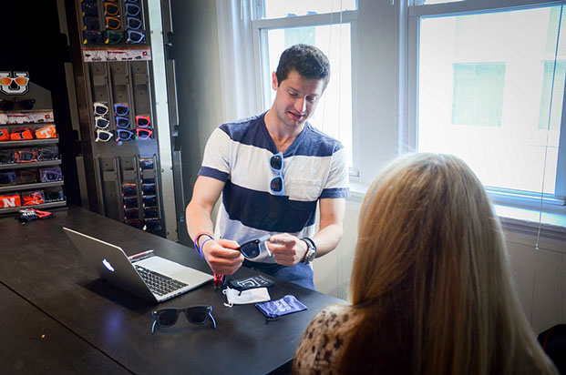
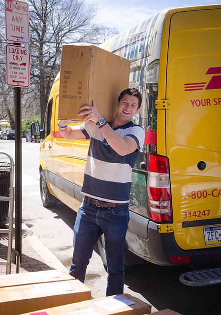

<
>
He may be the most sociable student at Penn. He knows the name of the swiping lady at Pottruck and fist bumps the burrito woman at Chipotle. He is obsessed with socks. He wore a raccoon hat during his NSO and introduced himself to everyone.
He may also be the busiest person on campus. A Wharton senior, Dan Fine has founded four businesses, actively runs Glass-U and developed Dosed in the midst of his studies and extracurriculars.
Dan is best known at Penn for Glass-U, which was conceived in his Ware College House dorm room during his freshman year. Glass-U makes fully-folding sunglasses and is now licensed to produce glasses with the logos of hundreds of universities and Greek organizations across the country.
Dan said it has been a challenge to maintain a balance between work, school and a social life.
“I’m a pretty social guy,” Dan said. “It’s very challenging to focus and run a company when everyone is out there having fun. No doubt it is a balancing act.”
There is no typical school day for Dan — only that he “claims” to wake up every morning at 7:21 a.m.
“7:21, because 21 is my lucky number,” he said, “but that doesn’t work when I’m at Smoke’s until 2 a.m.”
Aside from the wake-up time, essentials in Dan’s day are a workout at Pottruck and meals with friends — “I never eat alone. I hate eating alone,” he said.
College senior Bailey Ramsey is one of Dan’s close friends at Penn and said she and Dan see each other mostly over meals.
“Any meal he goes to, he insists on ordering for everyone. I originally thought it was annoying, but now I love it,” she said.
College senior and another close friend Zachary Levine said that Dan has his own rules, but that he “has a huge heart” and is “the most well-intentioned person” he knows.
FAMILY FIRST
Many of Dan’s friends are also close with his family and say it is clear where Dan’s personality comes from.
“His family is amazing,” Levine said. “Everything that Dan gives comes from his family. His calm, cool, collected nature is definitely from his dad. His dad is smart and kind-hearted. All of his Dan Fine-ness comes from his mom.”
Ramsey agreed. “I know his parents very well. I love his family. He and his mom are very similar; she is very passionate and very good at what she does. She calls me more than my own mother calls me.”
Dan himself emphasized the supportive environment his family has created. His parents and his brother, Jake, are the people he looks up to the most.
“My family is incredibly close,” Dan said. “That is a part of why I chose Penn — it’s 45 minutes from home.”
Dan’s entrepreneurial story also began with his family. Dan was 11 years old when his younger brother was diagnosed with Type-1 Juvenile diabetes. Dan found out when he got off the bus from summer camp in 2004, and he recalled that his first thought was, “How can I help?”
“[Jake] has to prick his finger once a day when I cringe at going to the doctor once a year,” Dan said. “The goal was to maintain his normal life: He has diabetes, diabetes doesn’t have him.”
But Dan’s ambition went beyond helping his brother. With the desire to find a cure for diabetes and help others with the disease, Dan founded Team Brotherly Love, a non-profit organization that has raised over 1.9 million dollars for diabetes research to date.
Dan emphasized that, at age 12, he did not feel like an entrepreneur, but instead attributes much of the success of TBL to his community in his hometown of Princeton, New Jersey.
“It wasn’t viewed as founding a company,” Dan said. “The purpose was to help Jake. Everything was created by community. Parents were going out and getting prizes for our auctions. Fifty individuals are entirely responsible for our success. None of [this] could have been done without them.”
Dan feels that TBL has done more than just raise diabetes awareness.
“A huge purpose [of TBL] was how to engage young people in philanthropy. To teach people the importance of giving back. I’m passionate about diabetes, and most people are connected to some cause – the point is go make a difference,” Dan said.
STUDENT AND ENTREPRENEUR
The past 11 years since founding TBL have been a whirlwind for Dan. Upon graduating from Peddie School in 2011, Dan and his friend founded Match Tutors, which aligns students and tutors based on personality.
When he arrived at Penn, Dan tried to maintain a balance between life as a typical college student and a budding entrepreneur. A “swimming powerhouse” in high school, Dan had been recruited to swim for the varsity team and also joined the off-campus fraternity APES.
Although Dan left the swim team during his sophomore year, he remains a member of the Penn Cycling Team and a member of the Bell Society, an innovation group for seniors.
Yet since Glass-U was launched at the Rose Bowl in 2013, Dan spends much of his time in his office at the Pine Arms, running and expanding his business.
“It’s not just about sunglasses. It’s not a world-changing entity but does donate some of the profits [to charity],” Dan said. “Glass-U is targeting millennials. What is one of the products that everyone wears? Sunglasses. If you put in front of them a product that they actually desire, they will donate more.”
Dan also worked as the “client” for two Management 100 projects last semester.
“I love working with MGMT 100 teams,” he said. “It has been one of my favorite activities at Penn, being the client. It’s been a huge win-win. I sense they enjoy the projects, and it’s cool and flattering when they ask if they can intern with me.”
Wharton freshman Sam Bauman was one of the MGMT 100 students who worked with Glass-U.
“Dan was the ‘cool’ client on the list and [my team] knew that he would be readily accessible,” Bauman said. “You could tell he was really into his company, really cared about what he did and was excited to get people involved. I think he’s extremely savvy, he knows how to get what he wants and he’s really good with people.”
Bauman is one of the half dozen students who will continue to work with Dan this summer.
“All in, [MGMT 100] is a cool program and I love what its done to be able to connect me with younger students,” Dan said. “[My professor] Dr. G gave me a B-plus,” he laughed. “I learned what I liked and didn’t like through MGMT 100. I definitely prefer the client side to the student side.”
While MGMT 100 students are learning leadership skills through working for Dan’s company, he said that his own leadership style is still evolving.
“I don’t have a defined style,” he said. “How I lead has changed dramatically over the past year – watching employees come and go.”
Dan said he often learns through trial and error.
“Something that failed was having a bunch of people who were all task managers. ... It takes more work on my end and is not fun,” he said. “Now I am assigning someone to something that they’re passionate about. They can own that, have a project that they can define and go for it. It can be ‘intrapreneurial’ and takes way more off my plate. We’re building a culture around people following passions.”
Dan’s presence on campus and success has also captured the attention of Management professor Peter Fader, whose daughter is a College senior and whose son is a Wharton freshman and also worked with Glass-U for Dan.
“Glass-U on the surface seems like a modest idea, but there is so much more to it — [Dan’s] two steps ahead,” Fader said. “He comes up with clever ideas, he’s the ultimate salesman, he knows more than just how to get people onboard. He’s not walking in saying ‘I’m a student entrepreneur, help me out’ — he’s running it like a real business.”
Levine agreed with Fader and said that Dan’s unique style that he is loved for by his friends also applies to his way of doing business. “He is determined, he doesn’t accept boundaries,” Levine said. “He defies whatever social conventions are in place in order to pursue his goal.”
A SERIAL ENTREPRENEUR
In addition to Glass-U, Dan is now working on a new company, Dosed, with his brother. Dosed is a mobile app for diabetics that will allow them to manage and track their insulin dosage.
Dan came up for the idea for Dosed a year and a half ago and pursued it as a “hack” at PennApps. After hacking for eight hours straight, Dosed won the award for the Best Health and I.T. hack.
With the impending release of Dosed and operations of Glass-U at their busiest point of the year, due to the upcoming summer season, Dan said he has “way too much on [his] plate right now,” which is a challenge.
“It’s important to understand when a door opens, but also to be able to understand when to say no. I’ve hit that point. Having to cancel on people sucks. Some of the things you deem important, you won’t be able to squeeze in,” he said.
Dan also emphasized that the startup world is “glorified.” “Everybody looks at startups at how sexy they are, but there is very little about how easy it is,” he said.
Yet he is optimistic about the future.
“I totally view myself as a serial entrepreneur. I can create whatever I want. I want to build the next Virgin [Group],” he said.
Family friend and fellow entrepreneur Wayne Kimmel has known Dan for over 10 years, and is equally confident.
“I’m really proud of what he’s done and really excited about the next 10 to 20 years,” Kimmel said. “His fearlessness is incredible and his excitement is contagious. I think he will be so successful.”
As for further education, it is not in Dan’s direct trajectory. “I don’t see myself going for an MBA,” he said. “I think it’s repetitive to the Wharton undergrad. I typically say I won’t go for higher level but I also see the value in it.”
But in the immediate future, Dan wants to enjoy his last few weeks at Penn.
“I’m living the life of a college senior and making the most of that time,” he said. “But I’m trying to prepare my business to hit the ground running [after graduation].”
While his friends agree that Dan’s studies took the backseat to his work and social life, friend and fellow Wharton senior Sylvester Wee argued that Dan has gained just as much as any other student from his Wharton education.
“The point of being a student is trying to apply your classroom knowledge to reality,” Wee said. “There is no point learning all this knowledge and not being able to apply to the future. [Dan] makes the concepts play out in reality. That’s a true education. He has represented the University well.”